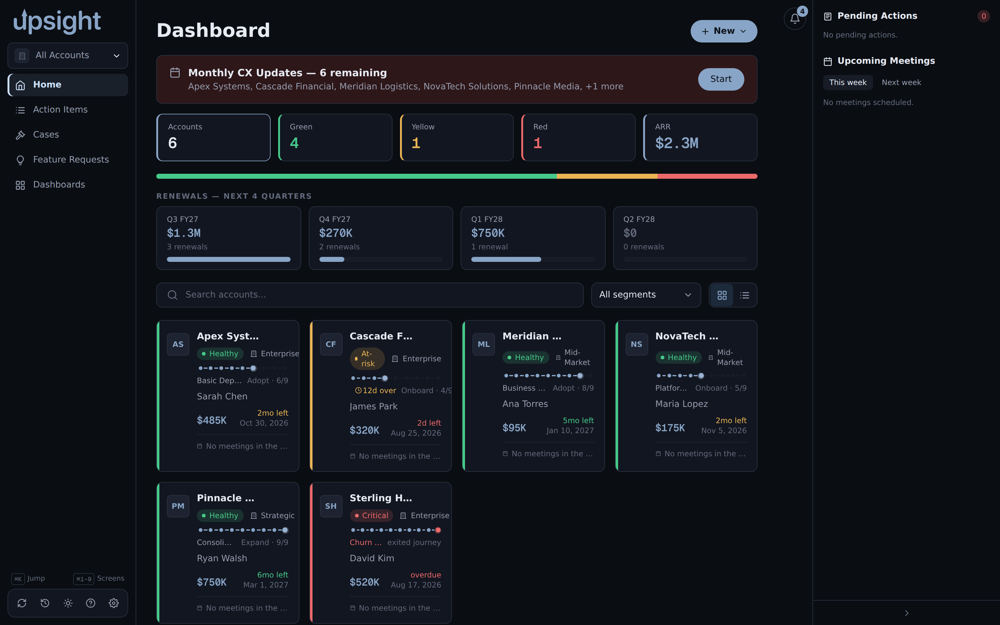
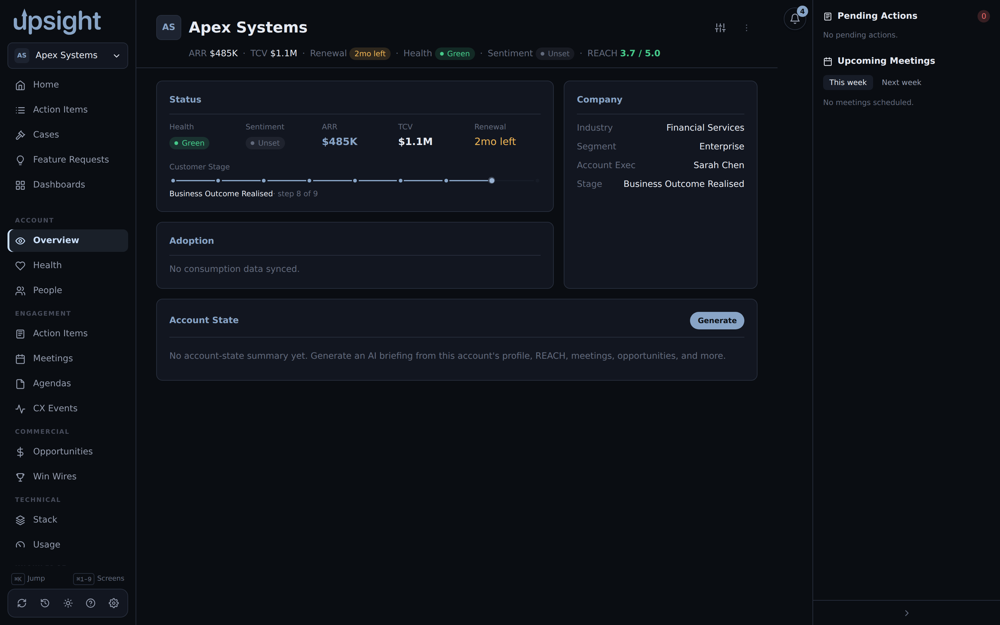

Accounts¶
Each account in Upsight corresponds to a customer organization from Salesforce. Accounts are the primary unit of work. Most of the app's screens live inside an account context.
The accounts list¶
The Home screen shows every account you have synced from Salesforce. Click any card or row to open that account. Toggle between a card grid and a table with the two icons at the right of the filter row.

Filtering and the portfolio metrics¶
The five tiles at the top (Accounts, Green, Yellow, Red, ARR) are more than stats, click Green, Yellow, or Red to filter the list to accounts at that health status, click it again to clear the filter. Click Accounts to clear a health filter without touching your other filters.
Below the tiles, the renewals strip shows the current fiscal quarter plus the next three. Click a quarter to filter the list to accounts renewing in that quarter.
Use the search box to filter by name, and the segment dropdown to filter by account segment. Combine any of these with the health and renewal filters, active filters show as pills above the list, click Clear to reset all of them at once.
Creating an account¶
Click New at the top of the screen, then New Account. The dialog searches Salesforce by name first, since Salesforce is the source of truth, pick a result from the list to import it. If Salesforce has nothing to import (or is not configured), fill in the manual-entry form below the search box: name is required, industry, segment, and account exec are optional. Either path creates the account and adds it to your list immediately.
Quick actions from the account card¶
Each card (and the account header, once you are inside an account) has a kebab menu with shortcuts that skip straight to a common action without opening the account first: Log CX Event, Create Meeting Agenda, Create Meeting Summary, CX Update, Add Contact, Add Win Wire, and Add to Stack.
The gear icon on a card opens Account Preferences, editable account-level settings plus a Danger Zone with Delete Account, which permanently removes the account and all of its local data. Export anything you need first (see Backup and restore); there is no undo.
Sections within an account¶

Once you open an account, the sidebar expands with these tabs:
- Overview shows the at-a-glance summary: consumption gauge, health posture, recent activity, and upcoming meetings.
- Health shows posture indicators and enrichment status from Salesforce, with inline editing. Field edits save locally and queue for write-back if Salesforce write-back is enabled (see Health and CX Events).
- People lists contacts, teams, and the org chart for the account, pulled from Salesforce and maintained by hand (see Account reference).
- Action Items tracks open tasks for this account (see Action items).
- Meetings shows past and upcoming meeting records, with AI-generated summaries where available (see Meeting summaries).
- Agendas holds meeting agenda drafts you can enhance with AI, export, or present (see Agendas).
- CX Events shows customer experience events from Salesforce (see Health and CX Events).
- Opportunities lists open and recently closed Salesforce opportunities (see Account reference).
- Win Wires holds win wire documents, generated from a PDF with AI or entered by hand, and refreshable against a linked Salesforce Opportunity (see Win Wires).
- Stack shows the customer's technical stack: Konnect orgs, installed products and plugins, and infrastructure details. You maintain these manually (see Account reference).
- Usage displays product utilization from account entitlements data (see Account reference).
- Q&A stores AI-generated answers to questions you ask about the account (see Q&A).
- Documents attaches arbitrary files to the account (PDFs, notes, and similar; see Account reference).
- Resources holds links and references specific to the account (see Account reference).
Syncing an account¶
Upsight pulls Salesforce data on demand, not on a continuous schedule. Click the sync
button in the account header (the rotating-arrows icon above the tab strip) to pull
the latest data. The app reads from your Salesforce CLI session (sf) and updates
the local database.
Edits you make in the app (posture fields, notes, health indicators) save locally immediately. If Salesforce write-back is enabled, the app pushes those changes back to Salesforce in the background. See Salesforce integration for details.